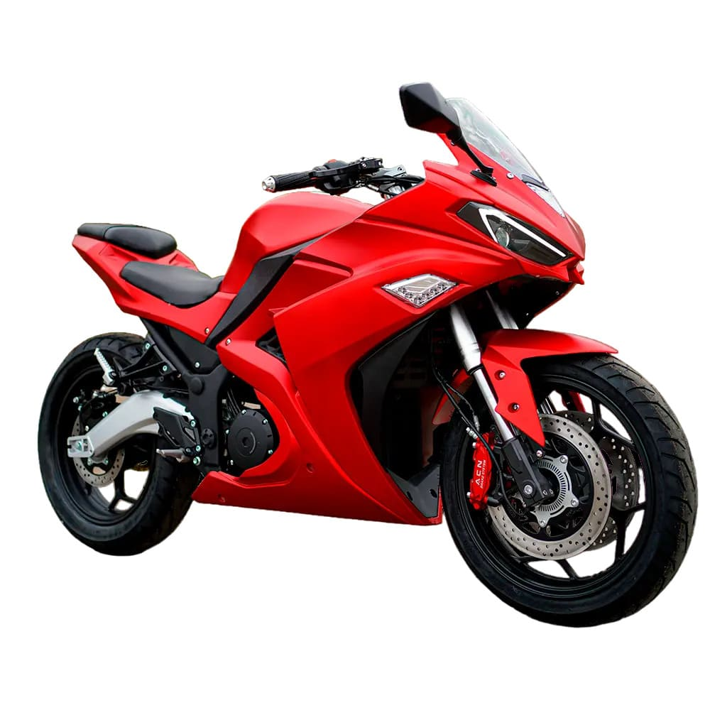
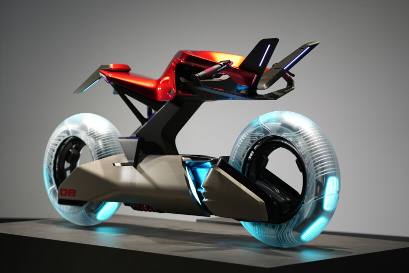

Электрификация
Yamaha активно развивает линейку электрических транспортных средств. Компания уже представила несколько электрических концептов и серийных моделей, включая скутеры и велосипеды с электроприводом.
В рамках своей стратегии развития электрического транспорта, Yamaha инвестирует значительные средства в разработку новых аккумуляторных технологий, повышение запаса хода и общей эффективности электрических двигателей.

Новые технологии
- Искусственный интеллект - системы помощи водителю и адаптивные настройки мотоцикла
- Бесключевой доступ - развитие технологий безопасного удаленного доступа к мотоциклу
- Передовые материалы - использование карбона, титана и композитных материалов для снижения веса
- Подключенность - интеграция мотоциклов с мобильными устройствами и облачными сервисами
- Системы безопасности - разработка адаптивного круиз-контроля и систем предотвращения столкновений
- Экологичность - снижение выбросов и использование возобновляемых материалов в производстве
Концептуальные модели
| Модель | Тип | Ключевые особенности | Статус |
|---|---|---|---|
| MOTOROiD | Электрический концепт | Искусственный интеллект, автономное управление | Концепт |
| YZF-R9 | Спортбайк среднего класса | Трехцилиндровый двигатель, аэродинамика | В разработке |
| E01 | Электрический скутер | Быстрая зарядка, городская мобильность | Ожидается в производстве |
| TY-E | Электрический триал | Высокая мощность, низкий вес | Тестирование |
Стратегия развития
Yamaha сформулировала долгосрочную стратегию развития, включающую несколько ключевых направлений:
- Расширение линейки электрических транспортных средств
- Развитие инновационных технологий управления и безопасности
- Усиление позиций в премиальном сегменте мотоциклов
- Снижение углеродного следа производства и эксплуатации мотоциклов
- Расширение международного присутствия, особенно на развивающихся рынках
Компания также активно инвестирует в исследования и разработки, сотрудничает с технологическими стартапами и привлекает талантливых инженеров для создания мотоциклов будущего.
